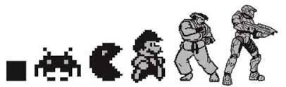

Ludic Historian
Exploring the Role of Ludic Experiences in Computer Gaming History
Welcome to the Ludic Historian series, where I spelunk into the fascinating realm of ludic history, unraveling the threads of our gaming past, especially within the context of computing. This is a journey that goes beyond the pixels, exploring the rich tapestry of ludic experiences that have shaped our electronic and digital interactions.